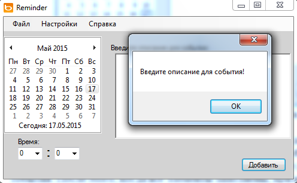

4.1 Технические и программные ресурсы, необходимые для разработки и эксплуатации программного продукта
Для разработки программного продукта достаточно иметь Microsoft Visual Studio 2012 и ОС Windows 7.
Для нормального функционирования программного продукта достаточно иметь у себя на компьютере операционную систему ОС Windows 7/8 и .NET Framework не ниже версии 2.0. Также необходимо иметь следующие файлы:
Reminder.exe – исполняемый файл программы;
help.html – файл справки;
settings.xml – файл с сохраненными настройками пользователя;
events.xml – файл с сохраненными событиями.
Для правильного функционирования справки, необходимо, чтобы файл help.html находился в одной папке с исполняемым файлом программы. Для работоспособности программы наличие файла settings.xml – не обязательно, при его отсутствии он создастся автоматически в текущей папке приложения после первого закрытия программы. Файл events.xml также создастся автоматически при первом добавлении события.
4.2 Интерфейс приложения
Программный продукт имеет главное окно, в котором пользователь добавляет новые события; окно просмотра событий, в котором пользователь может изменить или удалить существующие события и окно справки.
При запуске приложения происходит проверка сохраненных в xml-файле событий. И если такие события существуют, то пользователь будет уведомлен о них в виде сообщения (рис. 1).
Рисунок 1 – Сообщение о пропущенных событиях.
Если же пропущенных событий нет, пользователь будет уведомлен об этом соответствующим сообщением.
После этого запускается главное окно приложения (рис. 2).
Рисунок 2 – Главное окно приложения.
В главном окне приложения пользователь выбирает дату в календаре, задает время, или с помощью клавиатуры, или, выбрав необходимое время в соответствующих элементах окна, а также задает описание добавляемого события. После этого, когда все элементы заполнены, при нажатии на кнопку «Добавить» происходит добавление события во внутреннюю структуру программы. Если пользователь пытается добавить событие с пустым описанием ему будет выведено сообщение с просьбой заполнить поле (рис. 3).

Рисунок 3 – Сообщение с просьбой ввести описание
Если все поля заполнены верно, то событие будет успешно добавлено и пользователь будет оповещен об этом.
В главном окне приложения есть пункты меню «Файл», «Настройки» и «Справка». В пункте меню «Файл» есть подпункты «Просмотр» и «Выход» (рис. 4).
Рисунок 4 – пункт меню «Файл».
При выборе пункта «Просмотр» открывается новое окно, в котором отображаются все сохраненные события (рис. 5).
Рисунок 5 – Обзор событий.
В данном окне пользователь может просмотреть все события, редактировать события (двойной клик на нужном поле для редактирования), а также удалять события (выбор строки и нажатие кнопки «Удалить»).
После закрытия данного окна информация о событиях сразу же обновится в xml-файле.
При выборе подпункта «Выход» пункта меню «Файл» пользователь увидит сообщение с подтверждением выхода (рис. 6).
Рисунок 6 – Сообщение при выходе.
При нажатии на кнопку «Нет» происходит возврат к программе, «Да» - программа закрывается, при этом сохраняются все пользовательские настройки, и при следующем запуске программы окно будет выглядеть также как и перед закрытием. Сохраняются координаты окна относительно экрана, размер окна, а также цвет заднего фона главного окна приложения.
При выборе пункта меню «Настройки» (рис. 8) пользователь имеет возможность изменить задний фон приложения
Рисунок 7 – Настройки приложения.
В пункте меню «Справка» есть подпункты «Помощь» и «О программе». При выборе подпункта «О программе» пользователю откроется окно с информацией о разработчике программы (рис. 8).
Рисунок 8 – О программе.
При выборе подпункта «Помощь» пользователю откроется окно со справкой (рис. 9).
Рисунок 9 – Справка.
При нажатии на ссылку «здесь» откроется страница в браузере с более детальной справкой.
Программа также сворачивается в панель инструментов Windows и работает в фоне, не мешая пользователю (рис. 10).
Рисунок 10 – Программа в панеле инструментов.
Для открытия главного окна можно использовать двойной клик левой кнопки мыши или выбрать в контекстном меню пункт «Открыть».